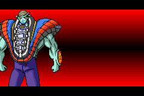

Ultimate Muscle - The Kinnikuman Legacy - The Path of the Superhero (USA)
EEPROM 4K
Cartridge Identity
- Game Code
AK2E(FamilyAK2)- Header Title
UMUSCLE- Maker / Revision
B2/ rev0- ROM Size
- 16.0 MiB (16,777,216 B)
- Save Media
EEPROM 4K- SHA-256
768d6dd7cc704596fa975411a084b4623d4f3ab66699793aa7bdfe968ac343f9- Engine / SDK Group
comm-002(145 families)
Screenshots


Observed Battery Save Layout
- Fill Byte & Active Size
0xFFfill · 479–479 / 512 B active (entropy 6.09 bits/B)- Active Offset Ranges
0x0–0xDF,0xE1–0x1BF,0x1E0–0x1FF(3 total)- ASCII Magic / Headers
ELCSMTLU,jluf- Observed Variable Regions
- 0 bytes across 0 spans: None
- Candidate Checksum/Counter Spans
- None
ROM Assets, Compression & Audio
- BIOS Compression
- LZ77 (
0x10): 155 streams · RLE (0x30): 0 streams - ROM Pointer Tables
- 107 tables (2 pointing to validated compressed streams)
- SDK Backup Tags
EEPROM_V122
Hardware MMIO Subsystems
ppu_display0x800c66c,0x802af58,0x802b0f0,0x802dbb0
Regional Variants & Revisions (Family AK2)
- Kinnikuman II-Sei - Seigi Choujin e no Michi (Japan) (
AK2J, 16 MiB)